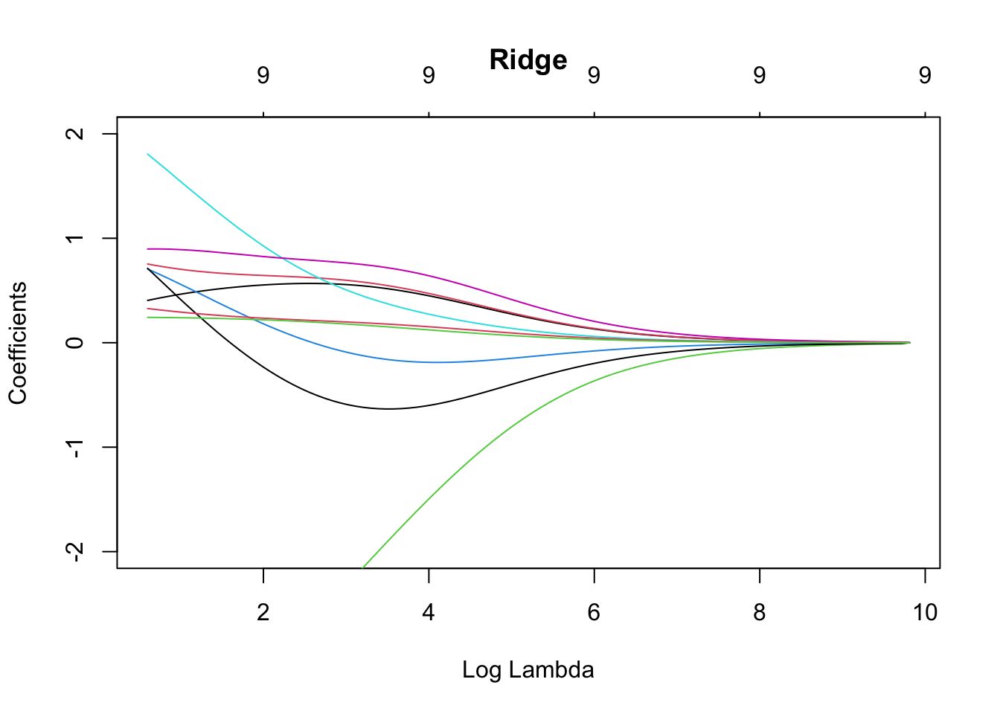
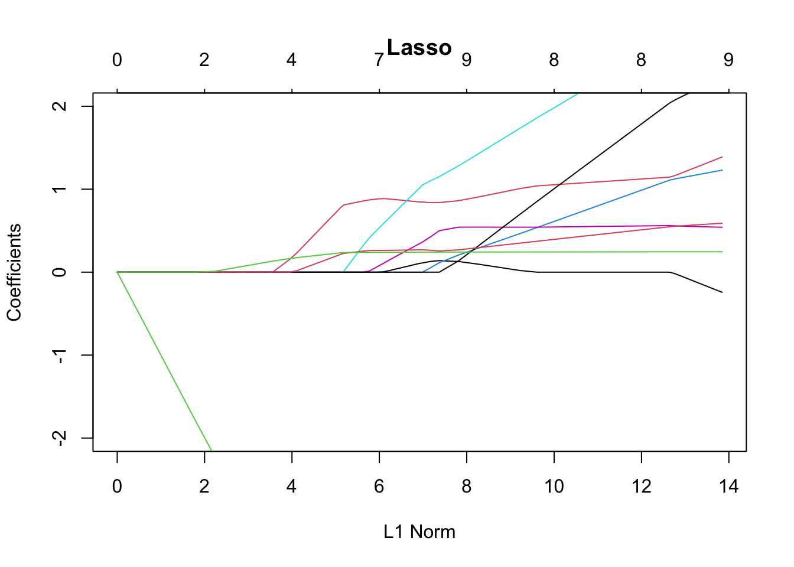
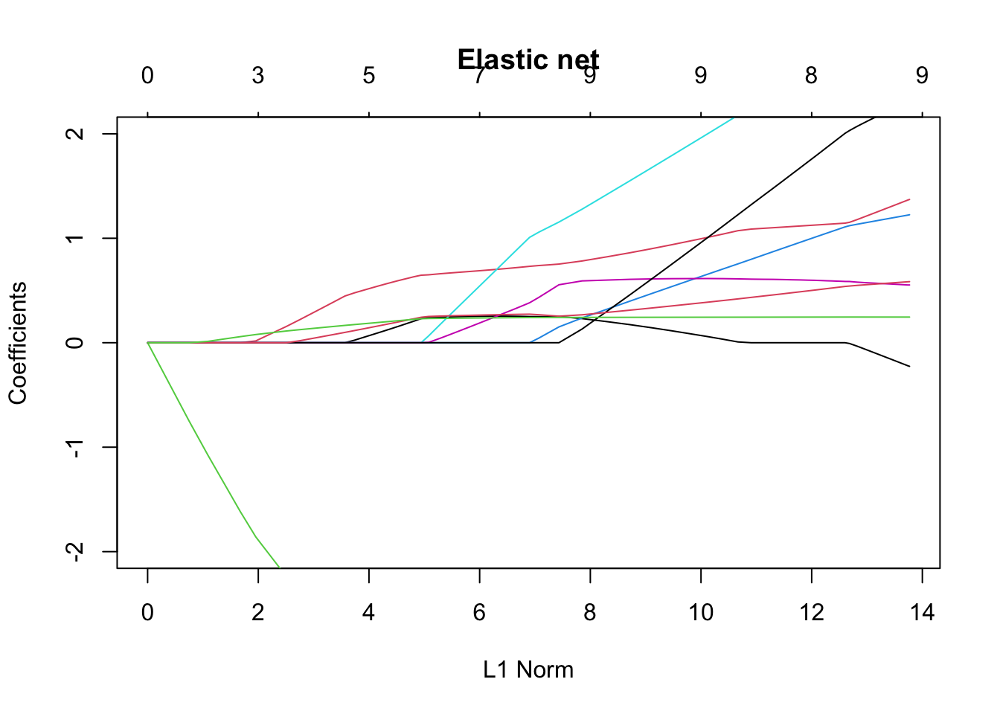
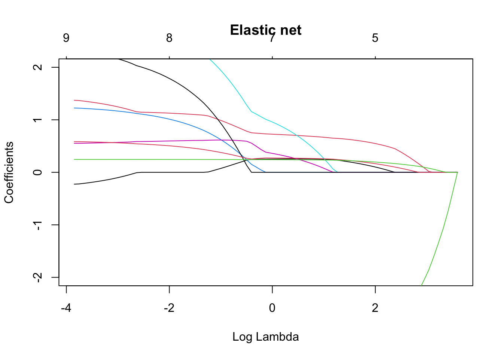
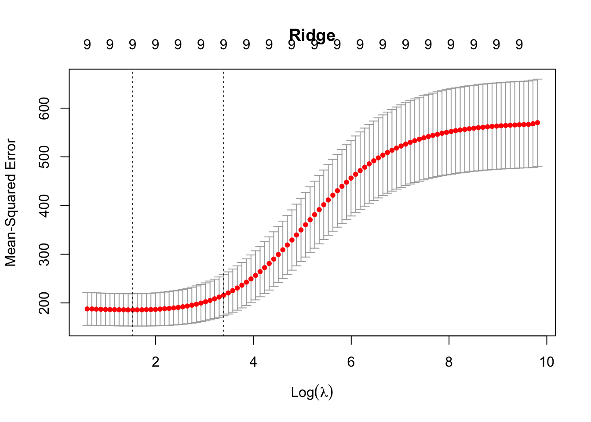

ozone <- read.table("../donnees/ozone.txt",header=TRUE,sep=";",row.names=1)[,-c(11:12)]
ozone.X <- model.matrix(O3 ~ ., data = ozone)[,-1]
ozone.Y <- ozone$O38 Régression sous contraintes de norme : ridge, lasso, elastic net
library(glmnet)
ridge <- glmnet(ozone.X, ozone.Y, alpha = 0)
lasso <- glmnet(ozone.X, ozone.Y)#par défaut alpha=1
en <- glmnet(ozone.X, ozone.Y, alpha = 0.5)plot(ridge,main="Ridge",ylim=c(-2,2))
plot(ridge,xvar="lambda",main="Ridge",ylim=c(-2,2))
plot(lasso,main="Lasso",ylim=c(-2,2))
plot(lasso,xvar="lambda",main="Lasso",ylim=c(-2,2))
plot(en,main="Elastic net",ylim=c(-2,2))
plot(en,xvar="lambda",main="Elastic net",ylim=c(-2,2))
set.seed(1234)
cv.ridge <- cv.glmnet(ozone.X, ozone.Y, alpha = 0)
cv.lasso <- cv.glmnet(ozone.X, ozone.Y) #alpha=1 par défaut
cv.en <- cv.glmnet(ozone.X, ozone.Y, alpha = 0.5)cv.ridge$lambda.min[1] 4.619799cv.ridge$lambda.1se[1] 29.69641plot(cv.ridge, main = "Ridge")
plot(cv.lasso, main = "Lasso")
plot(cv.en, main = "Elastic net")
xnew <- ozone.X[c(25,30),]
rownames(xnew) <- NULLxnew T12 T15 Ne12 N12 S12 E12 W12 Vx O3v
[1,] 13.6 14.4 1 0 0 1 0 3.55 97.8
[2,] 21.8 23.6 6 4 0 0 0 2.50 112.0predict(cv.ridge,newx=xnew) lambda.1se
[1,] 90.41122
[2,] 90.65036ozone<-read.table("../donnees/ozone.txt",header=TRUE,sep=";",row.names = 1)
ozone.X <- model.matrix(O3~.,data=ozone)
ozone.Y <- ozone$O3
cv.defaut <- cv.glmnet(ozone.X,ozone.Y)
lassodefaut<-glmnet(ozone.X,ozone.Y,lambda=cv.defaut$lambda.min)ozone$vent <- as.factor(ozone$vent)
ozone$vent <- relevel(ozone$vent,ref="NORD")
ozone.X <- model.matrix(O3~.,data=ozone)
cv.nord <- cv.glmnet(ozone.X,ozone.Y)
lassonord <- glmnet(ozone.X,ozone.Y,lambda=cv.nord$lambda.min)predict(lassodefaut,ozone.X[1:4,]) s0
19960422 73.05686
19960429 92.67573
19960506 69.26897
19960514 80.69977predict(lassonord,ozone.X[1:4,]) s0
19960422 79.43741
19960429 90.58414
19960506 74.36556
19960514 75.06648ozone.X <- model.matrix(O3~.-vent-nebulosite+C(vent,sum)+
C(nebulosite,sum),data=ozone)
cv.sum <- cv.glmnet(ozone.X,ozone.Y)
lassosum <- glmnet(ozone.X,ozone.Y,lambda=cv.sum$lambda.min)
predict(lassosum,ozone.X[1:4,]) s0
19960422 78.05238
19960429 89.87258
19960506 75.07092
19960514 73.93502